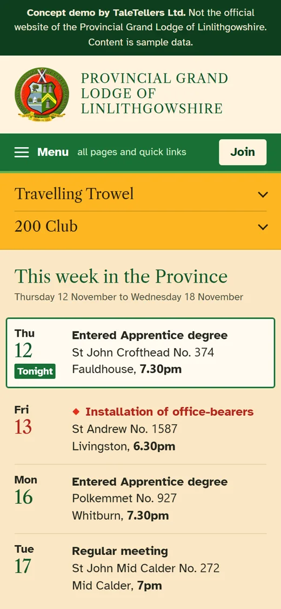
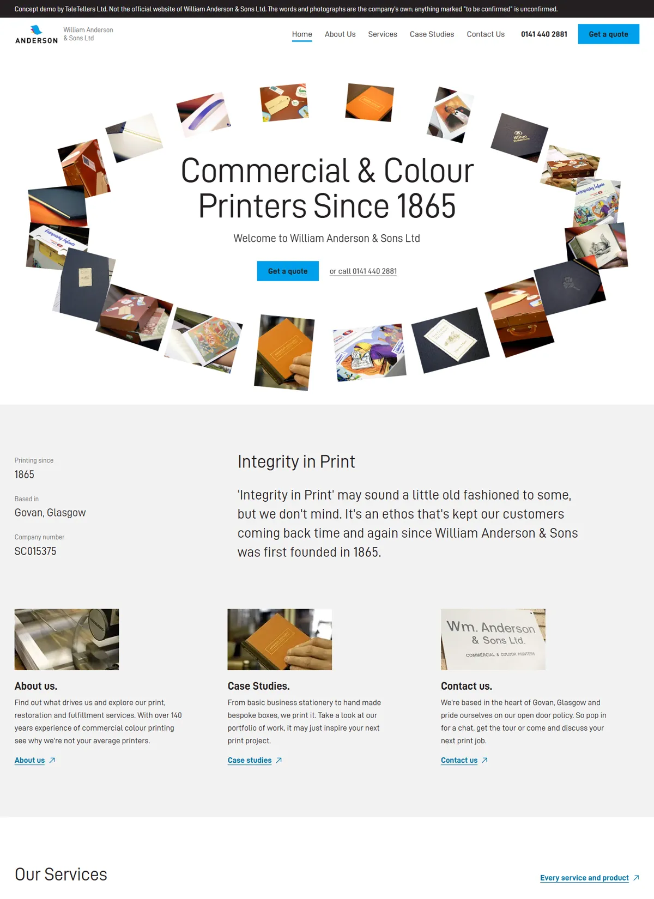
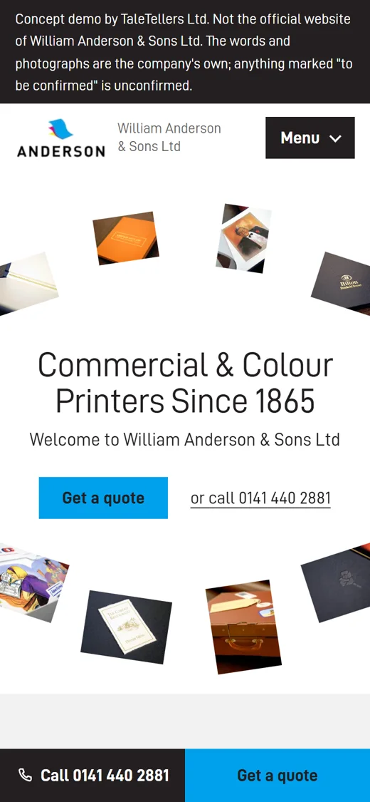

Three concept demos
Each of these is a complete, working site, built to show a real organisation what it could have. They are demos, not client work, and the lodge sites run on sample data.
Provincial Grand Lodge of Linlithgowshire
Concept demo
What the Province needed
A Province looks after many lodges. Members want one place to see who is meeting this week, the Province wants its notices seen, and a newcomer wants a plain way to ask about joining.
What we built
- “What’s on in the Province”: every lodge’s meetings and special events in one calendar, with tonight’s meeting marked
- Installations and special events listed beside the week ahead
- Notices such as the Travelling Trowel and the 200 Club at the top of the home page; on a phone they fold away until tapped
- A welcome from the Provincial Grand Master, and a “Thinking of joining?” route
- Pages for the lodges, news, the archive and contact
View the concept demo: Provincial Grand Lodge of Linlithgowshire


Lodge St John Mid Calder No. 272
Concept demo
What the lodge needed
Members mostly come for one thing: the next meeting. The date, the degree, the time and the place should be the first thing on the page, and easy to put in a calendar.
What we built
- The next meeting set large at the top, with a days-to-go count and the meeting after it alongside
- “Add to my calendar”, “Open in Maps” and “All dates” buttons
- “Get meeting reminders”, so members can be told before each meeting
- The Right Worshipful Master’s message to members and visitors
- Pages for office-bearers, Past Masters, the gallery, the 200th anniversary, the lodge’s history and its events


William Anderson & Sons Ltd
Concept demo Preview only: needs the client’s OK
What the printer needed
Commercial and colour printers in Glasgow since 1865. A firm like that needs its work seen and its phone number found: show the print, say what the company does, and make asking for a quote easy.
What we built
- A home page where the company’s own photographs of its print ring the headline
- “Get a quote” in the header, with the phone number beside it
- On a phone, Call and “Get a quote” stay fixed at the bottom of the screen
- About, services, case studies and contact pages, using the company’s own words and photographs


Games and mods
The other thing we make, kept short here.
HyGuns
Our Hytale gun mod, with the HyGuns Plugin. 87K+ mod downloads and 65K+ plugin downloads on CurseForge, as of October 2026.
- Orbis Disasters
- Natural disasters for Hytale worlds. In development.
- The HyGuns server
- A Hytale server with a tactical shooter mode and zombies. In development.
Minecraft mods: All Stone To Tools (188K+ downloads), All Slabs To Blocks (80K+), All Wools To String (3K+). All projects on CurseForge.
Want one like these?
Say who you are and what the site has to do. One email is enough to start.